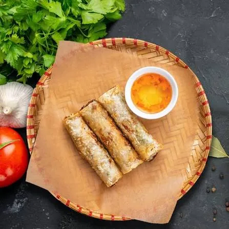
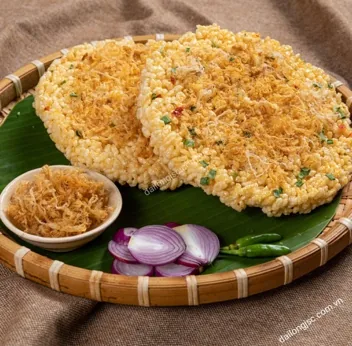
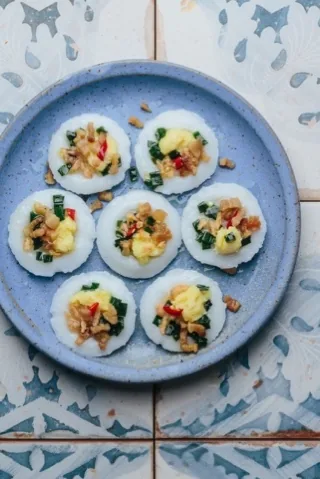
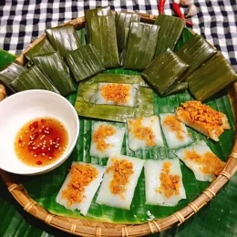
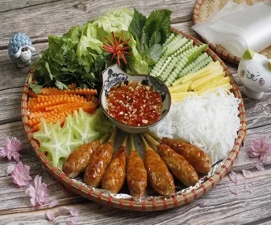
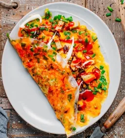
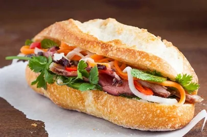
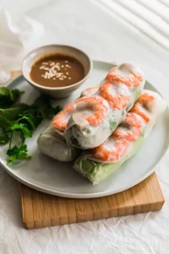
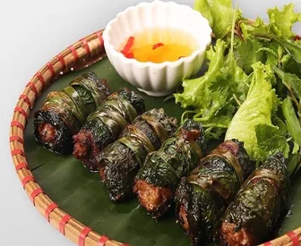

Xôi xéo
Riz gluant aux haricots mungo
- Dans l’assiette
- Riz gluant, haricots mungo, échalotes frites
- Origine
- Hà Nội
Un incontournable. T'as sûrement déjà mangé. Le riz est souvent cuit dans une feuille de bananier, ce qui le rend très typique
VIETNAM BELLY TOUR
Street food, petites bouchées et encas vietnamiens.
Riz gluant aux haricots mungo
Un incontournable. T'as sûrement déjà mangé. Le riz est souvent cuit dans une feuille de bananier, ce qui le rend très typique

Nems frits du Nord
Le fameux nem, on ne le présente plus

Galette de riz soufflé
Mon pêché mignon ! Se mange comme des chips..

Petites pâtes de riz vapeur avec poudre de crevette
Se mange tout seul, bouchée après bouchée. J'aime beaucoup

Gâteau de riz plat en feuille
Ca a un gout similaire que "banh beo", mais la feuilel de bananier rend plus fun à manger / petit gout en plus

Brochettes de porc à la citronnelle
Absolument incroyable. Ils en vendent dans un seul restau en France (Viet 1331) je l'ai déjà commandé 4x. FYI, on peut te le proposer avec des galettes de riz, à manger comme des rouleaux de printemps

Pizza vietnamienne
Les fameuses ! C'est très bon, tu peux en trouver dans des petits stands.

Sandwich vietnamien garni
Je ne te le présente pas.. A noter que dans les "grands magasins" on peut y ajouter énormément de viande, dont du pâté. Ce qui est très typique. Le pain est mou, ca va te surprendre

Rouleaux de printemps frais
Basico-basic

Bœuf grillé dans des feuilles de lot
Une des grandes spécialités! Mais étrangement, j'en ai rarement mangé. C'est plutôt OK
Mini-crêpes croustillantes aux crevettes
Jamais mangé mais ça semble bon public et très bon
Aucun résultat pour cette recherche.